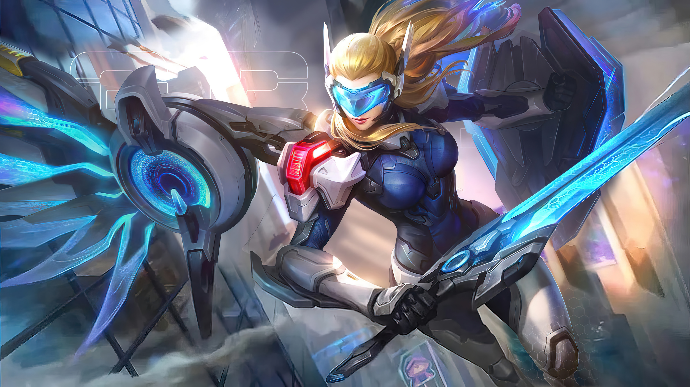
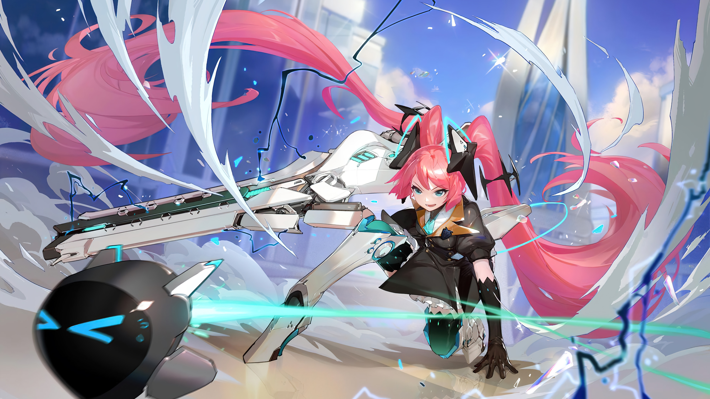

No Vale do Norte, as Valquírias são guerreiras reverenciadas, responsáveis por guiar os espíritos dos heróis caídos em Valhalla. A jovem Freya sempre se viu à sombra de sua irmã mais velha, Skuld, uma prometida Valquíria. Skuld, admirada e poderosa, era a esperança de sua tribo, enquanto Freya levava uma vida despreocupada até que, após a partida de Skuld para se tornar uma Valquíria, decidiu visitar o Santuário dos Mártires. Durante sua visita, Freya toca acidentalmente uma antiga relíquia chamada Coração de Aurora, desencadeando uma energia devastadora. Skuld, em um ato heroico, sacrifica-se para conter a energia, desaparecendo para sempre. Assolada pela culpa, Freya se dedica a treinar e, anos depois, torna-se uma Valquíria. Com o tempo, Freya enfrenta novos desafios quando o capitão Bane e seus piratas ameaçam o Vale. Ao descobrir que o Coração de Aurora foi visto novamente, ela sente a conexão com sua irmã e decide enfrentar o perigo, determinada a proteger sua terra natal e honrar o legado de Skuld. A história explora temas de sacrifício, coragem e o caminho para se tornar uma heroína em meio às adversidades.
Saiba maisEm Eruditio —a Cidade dos Estudiosos, dificilmente há alguém que não conheça Layla. Ela é a "filha de Eruditio", assim como uma estrela brilhante que brilha sobre as ruas de Eruditio na escuridão da noite. Corajosa e altruísta, ela sempre tinha um sorriso brilhante e feliz no rosto enquanto carregava a arma que seu avô lhe entregou, protegendo Eruditio à sua maneira. Quando criança, Layla sempre perguntava ao avô sobre seus pais, mas sua relutância em contar a ela e seu rosto triste lhe diziam que era algo trágico. Por causa disso, Layla decidiu nunca mais magoar seu avô, então ela parou de perseguir o assunto. No entanto, como segredos não podem ser escondidos para sempre, a verdade sobre seu nascimento eventualmente veio à tona, e acontece que seus pais sempre a observavam dos céus — bem, no sentido literal.
Saiba mais
Lunox nasceu com poderes mágicos, e seu mundo de sonho reflete e muda o mundo real. Com esse poder, ela usa seu mundo de sonho para manter temporariamente o equilíbrio de energia entre a ordem e o caos. Mas quando o poder da ordem e o poder do caos invadiram seus sonhos, Lunox caiu em um longo sono e se transformou em um dos "Orbes do Crepúsculo". Biografia Quando a batalha final começou, o Twillight Orb devorou as energias dentro do Mago e se abriu, de onde saiu uma garota, que estava cercada pelo poder do Caos e da Ordem. Seus olhos são profundos como o antigo lago. A atmosfera misteriosa que ela criou então colocou todos os heróis na terra dos sonhos... O poder do Caos e da Ordem têm lutado um contra o outro desde os tempos antigos, e a luta levou o mundo ao desespero. Lunox, a misteriosa donzela, é quem sobreviveu ao desespero. Com seu talento único, ela pode projetar seu sonho em realidade e mudá-lo. Um dia, um som sussurrou para ela e disse para equilibrar os dois poderes com sua habilidade de terra dos sonhos. Mas o custo seria fome do que nunca. Pelo mundo que ela ama, ela aceitou esse destino, canalizou os dois poderes para a terra dos sonhos e se tornou uma das Twilight Orbs, ao custo de cair em um sono sem fim. Mas o som também disse a Lunox que um dia, ela acordaria para prosseguir com seu destino: encontrar outras Twilight Orbs que são esquecidas pela história Origens do Crepúsculo
Saiba mais